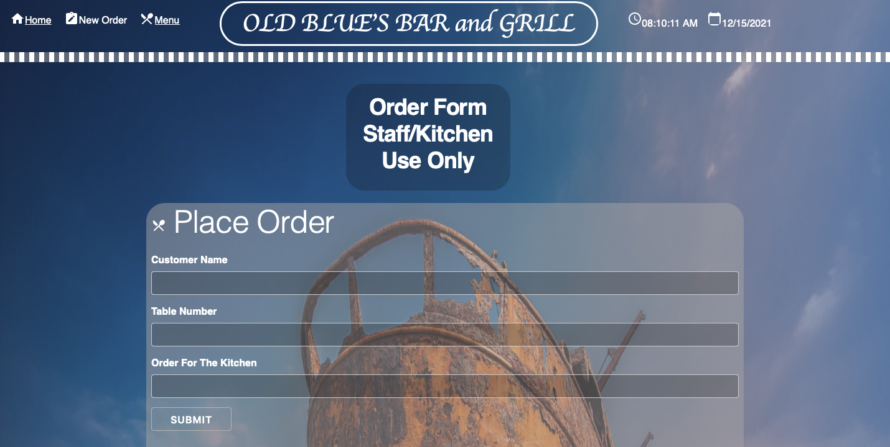
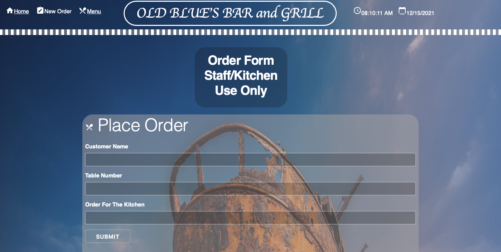

Hi, I'm Barry, a Software Development
Student
living in NL.
I'm passionate about this New Career Direction. I love
learning new
things and expanding my brain functions to grow more.
I find it so
exciting and intriguing. It makes me feel
so much ALIVE!
I'll be
graduating in August 2022. Look for me then,
"The World is my
Oyster".
Contact Me: Cell (709) 746-3458 or email
me at barrympoole@yahoo.com
I have to say that my last Sprint makes me very proud
as a Software Development Student. I put in
lots of
work and I love how it turned out. It's a basic site
but it's mine and I build it so I'm smiling from ear to ear
about this one. Below is just screenshots for now.
Just a little blog about it, it has 3 pages linked together,
(Home, Menu, and New Order Pages). It has a link to
wikipedia, links that bring you back to the top of the
page. It has a functional New Order page, so when an
order is taking, it's sent directly to the kitchen and once
it's completed, the order is served to the customers and
then deleted from the New Order List. My Favourite
part of this assignment is where I implemented a live
clock and calender.
 

Featured Work Continued
Something that got my attention this year
was Media Queries. I decided to
challenge myself to create
3 websites in one using Media Queries. Now
once again, it's very basic but I spent many hours
trying
to complete it with lots of trial and error
and Lessons Learned. Check it out below.
1000px/800px/600px,
the screens changed at these
different set positions!
Before HTML, CSS, and JAVASCRIPT,
there was Python and Figma Design!
Myself(Barry Poole) and Steve Squire teamed
up for all of Semester One and below is a little
collaboration
of one of our Python projects
and UI/UX Figma Designs when we were just cutting
our teeth so to speak.
It seems ages ago now
but it was new and exciting then and the learning
has not stopped since!!!
HTML, CSS, and JAVASCRIPT(JS)
I guess a Tech Sector Portfolio
just wouldn't be correct without a few examples
of your code.
So below is 3 screenshots
of HTML, CSS, and JAVASCRIPT Code from this
PORTFOLIO!